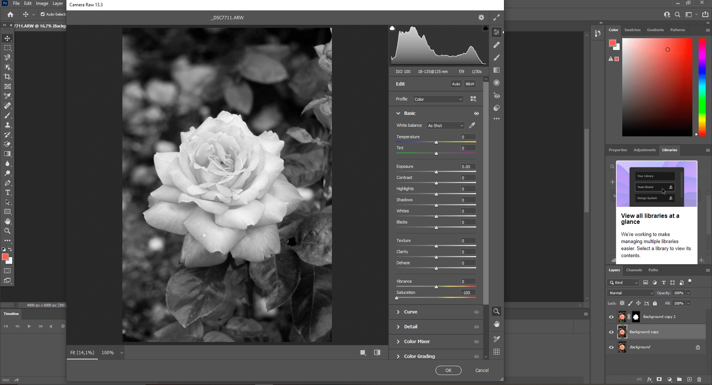

BILDBEARBEITUNG
Arbeit in vertrautem Programm
Bei Mia Zuhause bearbeiteten wir die vorhin geschossenen Bilder in Photoshop. Da ich während des Gymnasiums einen zweijährigen Photoshopkurs besuchte, kannte ich mich mit dem Programm schon gut aus. Trotzdem frischte ich mein Wissen mit ein paar YouTube Tutorials nochmal auf, bevor ich mich an die Bearbeitung der Fotos setzte. Ich versuchte möglichst viel Farbe aus den Bildern herauszuholen und nur mit den einfachen Einstellungen schon viel zu erreichen. Was ich in der Bildbearbeitung gelernt habe, konnte ich auch im Editieren von Videos und dem digitalen Zeichnen gebrauchen.
